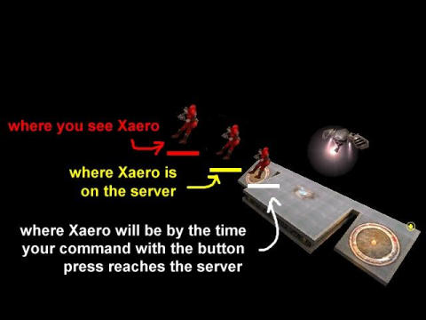
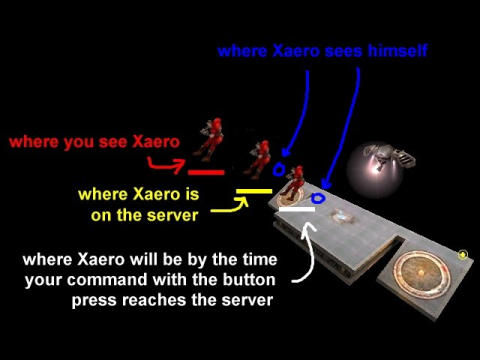

That's right, it's only a solution. There are plenty of others, such as “push latency” (remember that from QuakeWorld?) and client-side hit tests, and none without drawbacks. What we'll be doing is called “backward reconciliation.” Its only real drawback is that some of its effects affect more than just the player it helps, and in negative ways. I'll explain exactly how later, and why I don't think it's generally a problem.
Here's what we'll be trying to solve:
You might not have given much thought to how framerate-dependent behavior affects hit consistency before. Recall that players' states are only updated when the server receives a command, which is sent every client frame. That means a player who is holding a steady 125 FPS will – all other factors not considered – move much more smoothly on the server than one who gets 30 FPS. Keep in mind that your commands (including attacks) will arrive asynchronously from the server frame and snapshot, just like these other players' commands, and answer this question: if you're going to attack one of them with a railgun, which would you rather aim at?
Right: the player who does 125 FPS. His movement on the server more closely resembles what your client is showing you. The other, compared to your nice, smooth representation, will probably be “jerky.”
“Skipping” happens when a server frame goes by without a command from the skipping client. The player's origin in the snapshot will be the same as in the previous snapshot. Intermittent, small periods of non-movement like that cause skipping. We can smooth it out, but never fix it entirely.
It's caused by 1) packet loss; 2) low framerates (try setting com_maxfps to 5 online sometime and see what other players say about your “connection”); and 3) inconsistent arrival times, which is usually caused by bad or overloaded routing. (Many routers, giving low priority to UDP packets, will save up UDP packets and send them in spurts when they have a lot of TCP traffic.) Any combination of those to any degree can do it as well.
Skipping happens to a lesser degree than what I just described to almost every player. Most players' commands don't reach the server in a perfectly consistent manner, which causes a sort of micro-skipping. Most of the time, their attackers can't notice, because they get a 20 FPS subsample of the player's movement, which tends to smooth it out.
Quake 3's “built-in 50ms lag” is actually only 50ms when the server is running at 20 FPS (sv_fps 20) – which most do. It's caused by the need to interpolate rather than extrapolate the states of other players. To interpolate, you need two known values, so in this case you need two snapshots. The client engine waits, then, for one extra snapshot before releasing the most current snapshot to the client game. What you see is smooth and mostly like what actually happened on the server, but 50ms behind what your ping tells you it should be.
|

Picture 1: The Effects of Latency on Aim
Internet latency might be an obvious problem, but it's not always obvious how it affects the game. The picture on the right shows the effects of latency as it applies to aiming at another player with an instant-hit weapon. Imagine you have the railgun, and you're pinging 200. You won't see Xaero at the yellow or white positions, you see him at the red one. If you press the attack button at this instant, your command with the button press will reach the server when Xaero is at the white position. So this is where you'll have to aim in order to hit him. |
|

Picture 2: Xaero's Predicted States
Now consider that everyone sees themselves ahead of where they really are on the server. Their states are predicted. Assume that Xaero is a player who pings under 50, and take look at the next picture, which I also created with my mad Photoshop skillz. The blue circles indicate where Xaero sees himself. The first (leftmost) one is where he sees himself when you see him at his red position. The second is where he sees himself when your rail attack (hopefully) hits him. One thing, thankfully, that we don't have to is worry about is your own prediction when we do the lag compensation. That's because, by the time your command with the button press reaches the server, your movement will have reached it as well, and your state on the server will match your predicted state. Prediction error will cause problems, but we'll talk about that later. |
We'll keep a history. That's the first thing. The server needs to “remember” what states every player has been in for every snapshot, back a few hundred milliseconds.
Just before a snapshot is sent to every client (at the end of G_RunFrame()), we'll store every player's origin in a queue. The origin we'll store is the final, snapped origin – the actual origin sent to every client. That way we can be sure that when we use the history, it will most accurately reflect what each client drew.
When it's time to do an instant-hit attack, we'll wrap up the trace call. Before the trace, we'll backward reconcile (time shift, move back, whatever) every player who is not the attacker to the state the attacker saw them in when he fired. After the trace, we'll move them all back to their original states. It is important that this backward-reconciled state last as short a time as possible. Though the system more accurately represents what the attacker saw, it's a little unstable at this point (possibly with players slightly embedded in map geometry and other weird things like that), and needs to get into its previous, stable state as soon as possible.
(Don't worry at all about not having players at their right positions for a few moments. As long as no code that depends on players being in the right positions – such as spawning dead bodies – is run while the server is in this state, the game will be perfectly fine.)
Take a look at picture 2 again. If the server backward reconciles like I described, you can fire at Xaero in the red position. When your attack reaches the server, Xaero will be in his white position. He'll be moved to his red position for the hit test, then moved directly back to his white position.
Bam! We have a zero-ping rail.
Now is a perfect time to explain the negative efffects. We'll keep going with our current example. What does Xaero see?
If Xaero bothers to look, he sees a rail trail lancing empty space at his red position, while he's at the rightmost blue position. That's not going to look right. So there's one problem, but it's only visual.
Now imagine, instead of Xaero flying through the air, he's dodging around a corner. His position on the server (and also his predicted position) is around the corner, safe. He sees a rail trail beside him, and it hits him anyway. Whether that's a visual problem or a gameplay problem depends on Xaero's intent.
Next, imagine Xaero is “dodging” your rail attacks by timing them, and jumping to one side when he thinks you'll fire. He jumps, and would normally have dodged your attack. But he's backward reconciled to where he was when you saw him, and is hit. That's a gameplay problem.
These problems seem different on the outset, but they're really all the same thing: Xaero's movement effectively has latency added to it with respect to getting hit by instant-hit weapons.
Here's why I don't think it's usually an issue:
Here's where I think it may not be optimal:
Here's one of the nicest things about this solution: you get solutions to two other problems, for free, and the backward reconciliation code sets you up for solutions to other problems as well.
Here's a free one: a solution for discrete movement. Your hit consistency no longer relies on your target having a high framerate and a consistent connection. It all depends on your framerate, and partially on your connection consistency.
Here's another free one: a solution for built-in latencies, like Quake 3's built-in 50ms lag. These are automatically corrected for along with Internet latency.
Here's a set up: a solution for skipping. Since now the traces are done against how players were seen you can adjust just that before the server game sends a snapshot, without adjusting a player's true position. So how does that help? You can smooth out the state of a player who would otherwise be skipping around without messing up his actual movement. By predicting what his new state would be if the server had received a command in the last frame, you can make him appear to move more normally to everyone else while he skips about on the server, and their shots against him will land just fine.
How about CPMA's and OSP's 50ms lag correction? We're already set up for it. You can backward reconcile everyone by 50ms always. (The Unlagged 2.01 code reflects that: if a player opts out of full lag compensation, or if it's switched off server-side, it still backward reconciles by 50ms for the hit tests.) You also backward reconcile all players by 50ms while projectiles are being advanced, and do a little clean-up projectile extrapolation on the client. Though the process may be a little different, this is almost exactly how those mods do it.
Here's another fun one that I'm planning on adding to Ultra Freeze Tag: letting spectators spectate another player by pointing and clicking on him. You couldn't do that easily without backward reconciliation. (You could do it client-side, which would be a pain.) Without some kind of lag compensation, you would have to lead your shots, which would kind of suck for a feature like that.
Anyway, we've done plenty of theorizing. Let's do this thang.